VRayDisplacementMod
This page provides information on the V-Ray Displacement Modifier.
Overview
Displacement mapping is a technique for adding detail to your scene geometry without having to model it first. The concept is very similar to bump mapping. However, bump mapping is a shading effect that only changes the appearance of a surface, while displacement mapping actually modifies the surface.
The V-Ray Displacement Modifier adds displacement to geometry. While it is similar in function to the standard 3ds Max Displace modifier and other displacement tools built into 3ds Max, VRayDisplacementMod provides a number of additional controls for fine-tuning the displacement and is optimized to work with the V-Ray renderer.
Since V-Ray 5, update 2, 3D displacement (3D mapping, Subdivision, material displacement) behaves in the same way as in V-Ray Standalone. For scenes saved with older V-Ray versions the new behavior can be enabled by resetting the render settings (i.e. switching to another renderer and back).UI Path: ||Select geometry|| > Modifiers menu > V-Ray...
||Select geometry|| > Modifiers menu > V-Ray > V-Ray Displacement Mod
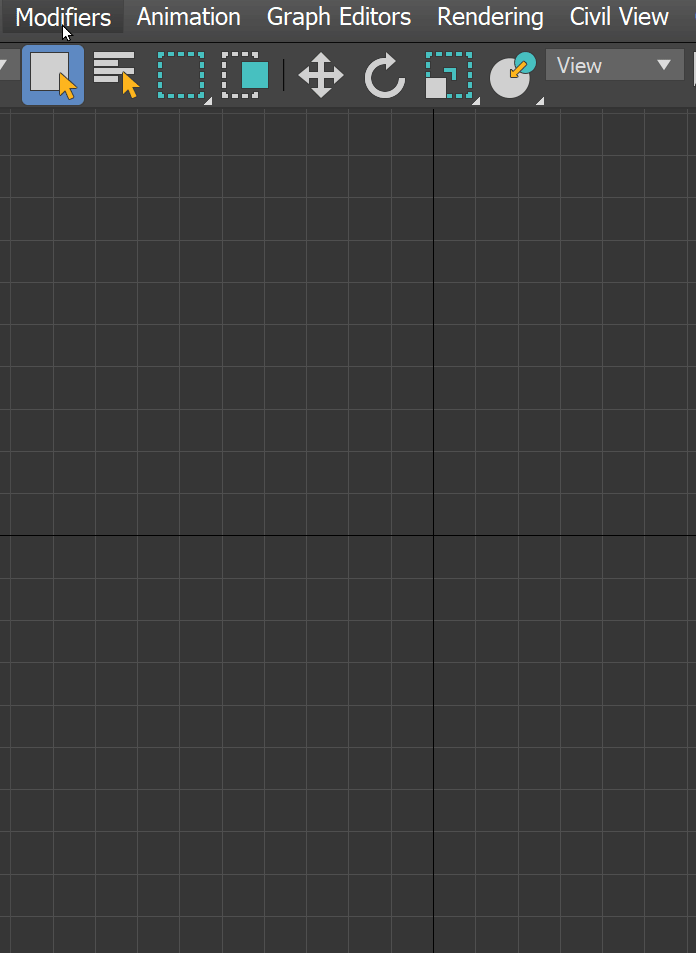
||Select geometry|| > Command panel > Modify tab > Modifier list > VRayDisplacementMod
||Select geometry|| > V-Ray Toolbar > V-Ray Displacement Modifier button

A displaced landscape using the 2D mapping (landscape) method.
The displacement map is a Simbiont procedural texture.
Example: Displacement vs Bump Mapping
This example shows the difference between bump mapping and displacement mapping. Notice the round outline of the sphere and its shadow in the case of bump mapping, and the deformed outline produced by the displacement. The displacement map in this case is a 3D Gradient Ramp (procedural) map; the 3D mapping method was used.
BumpDisplacement
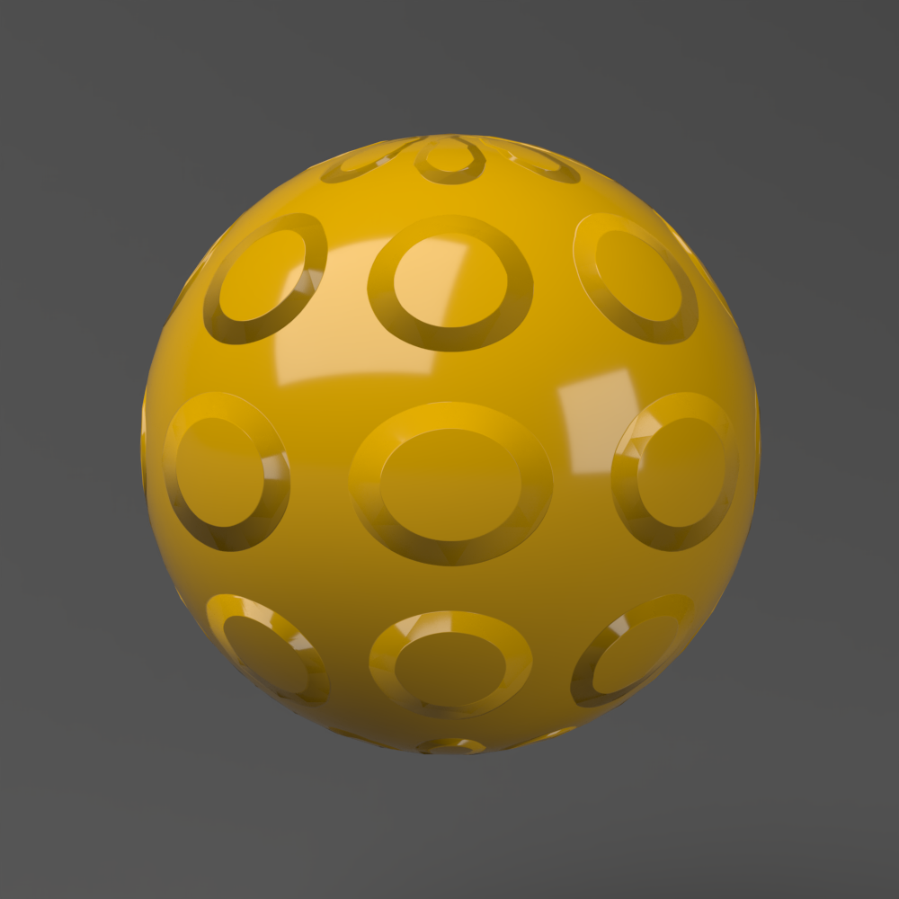

Displacement and VRayProxy
VRayDisplacementMod can be used with VRayProxy. In order to render a VRayProxy with displacement correctly, you have to follow a few steps first:
-
Make sure the VRayProxy has a distinct polygon material ID for the areas you want displaced.
-
Make sure these areas have proper mapping on them.
-
Attach a displacement map to a Multi/Sub-Object material.
-
Select the VRayProxy and add a V-Ray Displacement Modifier to it.
-
Enable the Use object mtl option in the V-Ray Displacement Modifier options.
Parameters
All parameters for VRayDisplacementMod appear on the Modify panel after VRayDisplacementMod has been added as a modifier to the geometry.
Type
While all displacement via VRayDisplacementMod relies on a texture for the displacement information, there are a few different ways V-Ray can interpret the texture and prepare the mesh for displacement.
Type – The method used to apply displacement mapping:
2D mapping (landscape) – Bases the displacement on a texture map that is known in advance. The displaced surface is rendered as a warped height-field based on that texture map. The actual raytracing of the displaced surface is done in texture space, and the result is mapped back into 3D space. The advantage of this method is that it preserves all the details in the displacement map. However, it requires that the object has valid UV coordinates. You cannot use this method for 3D procedural textures or other textures that use object or world coordinates. The displacement map can take any values.
3D mapping – A general method which takes the original surface geometry and subdivides its triangles into smaller subtriangles which are then displaced. It can be applied for arbitrary displacement maps with any kind of mapping. This method can also use the displacement map specified in the object's material. The object does not need to have UV coordinates.
Subdivision – Similar to the 3D mapping method, with the difference that it applies a subdivision scheme to edges (similar to a MeshSmooth modifier) rather than simply subdividing triangles. For triangular portions of a mesh, the Loop subdivision scheme is used. For quadrangular portions, the Catmull-Clark scheme is used. Other polygons are first converted to triangles. To only smooth the object without applying a displacement map, use this option and set the Amount parameter to 0.0. For more information, see the Subdivision Displacement example below.
Note: In older V-Ray versions, there was a great difference between the performance of the two mapping methods, with 2D mapping (landscape) being faster than 3D mapping in many cases. Since the introduction of dynamic geometry handling, 3D displacement has become a lot faster with similar or better results when compared to 2D displacement. For large displaced surfaces like oceans or mountains the 2D mapping (landscape) method might work better, but this method keeps the displacement map in a precompiled state in memory, so large displacement maps can take up a lot of memory. It might be more efficient to use 3D mapping with very large maps since it can recycle the memory used for the displaced geometry.
Since V-Ray 5, update 2, Crease modifier is supported in Subdivision mode.
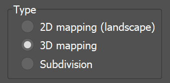
Example: Subdivision Displacement
Below is an example of the difference between an original mesh and subdivision displacement. No displacement map is used. To smooth the image, the Amount parameter is set to 0. When the Amount parameter is set to above 0, V-Ray automatically loads a Noise map.
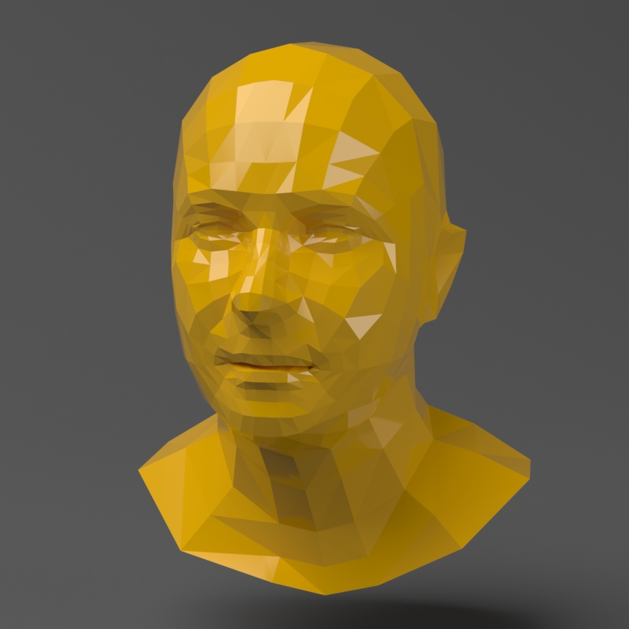
Original Mesh
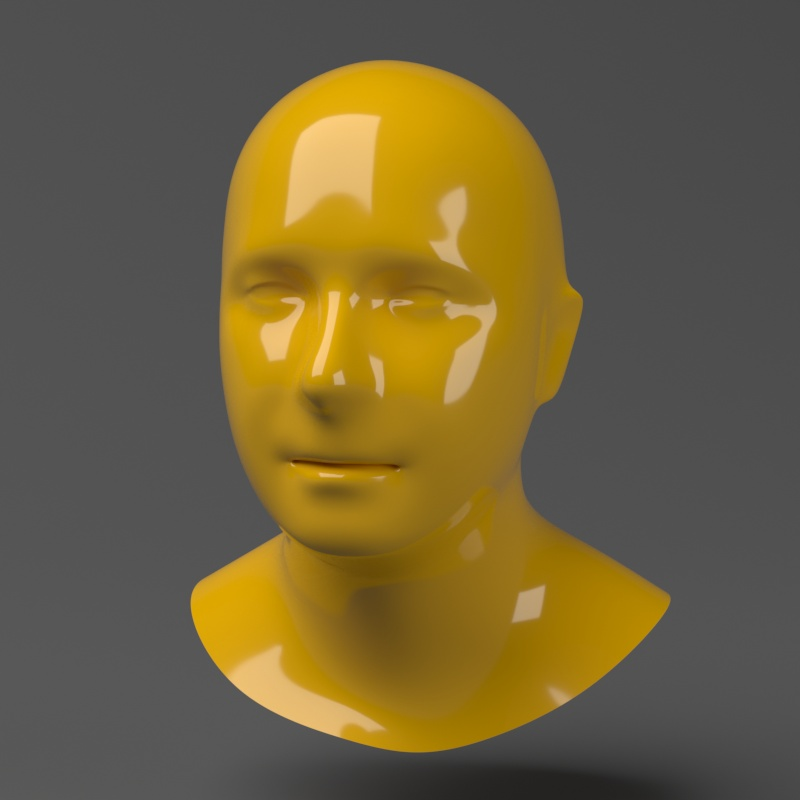
Type = Subdivision, Amount = 0
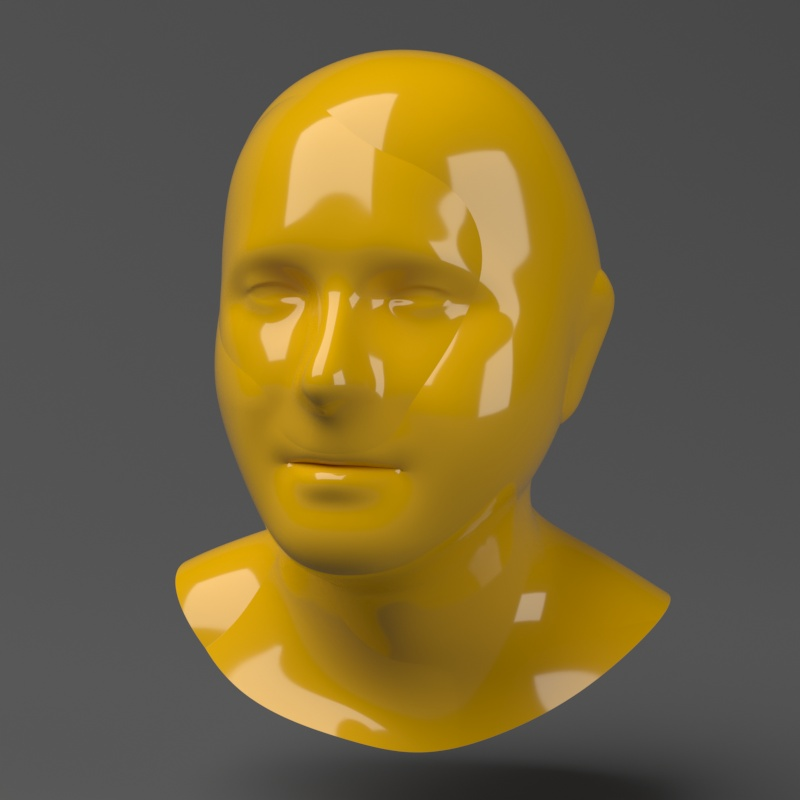
Type = Subdivision , Amount > 0
Common Params
These parameters are common to all types of displacement.
Texmap – The displacement map. This can be any texture map such as a bitmap, procedural map, 2D or 3D map, etc. This option is ignored if Use object mtl is enabled.
Texture chan – The UVW channel that is used for displacement mapping. This must match the texture channel specified in the texture map itself, if it uses explicit UVW mapping. This is ignored if the Use object mtl option is enabled.
Filter texmap – When enabled, the texture map is filtered. This option is ignored if the Use object mtl option is enabled.
Filter Blur – The strength of the filter applied to the map.
Amount – The amount of displacement. A value of 0.0 means the object appears unchanged (or simply smoothed, if the Subdivision method is selected). Higher values produce a greater displacement effect. This value can also be negative, in which case the displacement pushes geometry inside the object.
Shift – Specifies a constant which is added to the displacement map values, effectively shifting the displaced surface up and down along the normals. This value can be either positive or negative. For more information, see the Shift example below.
Water level – This value clips the surface geometry in places where the displacement map value is below the specified threshold. For more information, see the Clip Mapping example below.
Relative to bbox – When this option is enabled, the displacement height is based on the bounding box of the objects, the way 3ds Max performs displacement by default. When this option is disabled, displacement height is expressed in generic world units where white areas in the displacement map correspond to a displacement of 1 generic unit.
Texmap min/max – These two options specify custom boundaries for the displaced geometry. By default, they are limited to values between 0 and 1. For more information, see the Texture Boundaries example below.
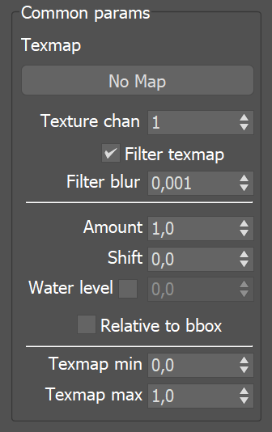
Example: Shift
Note that the Shift parameter is an absolute value in world units. If you change the Amount, you will probably need to adjust the Shift too.
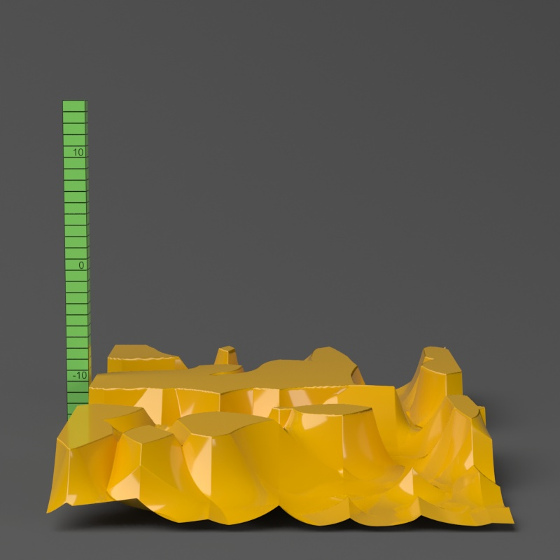
Shift = -10.0
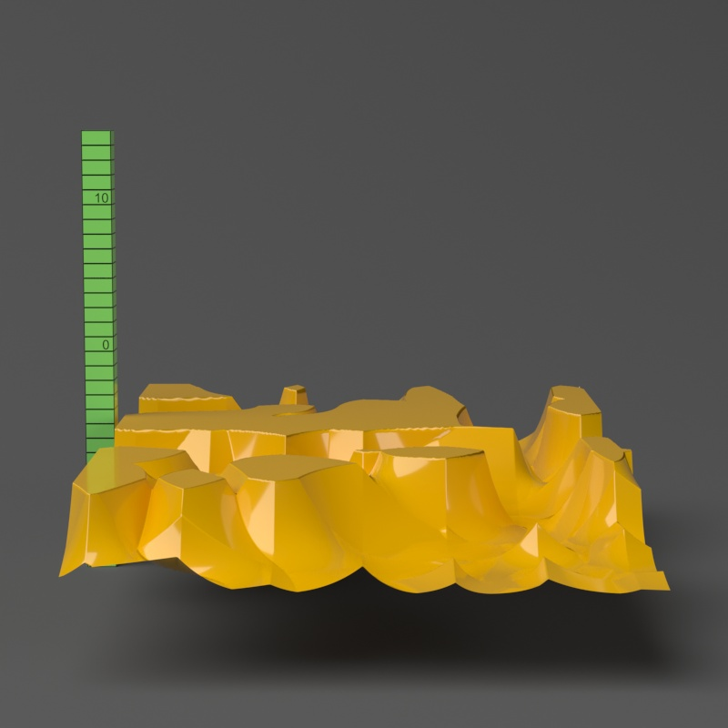
Shift = -5.0
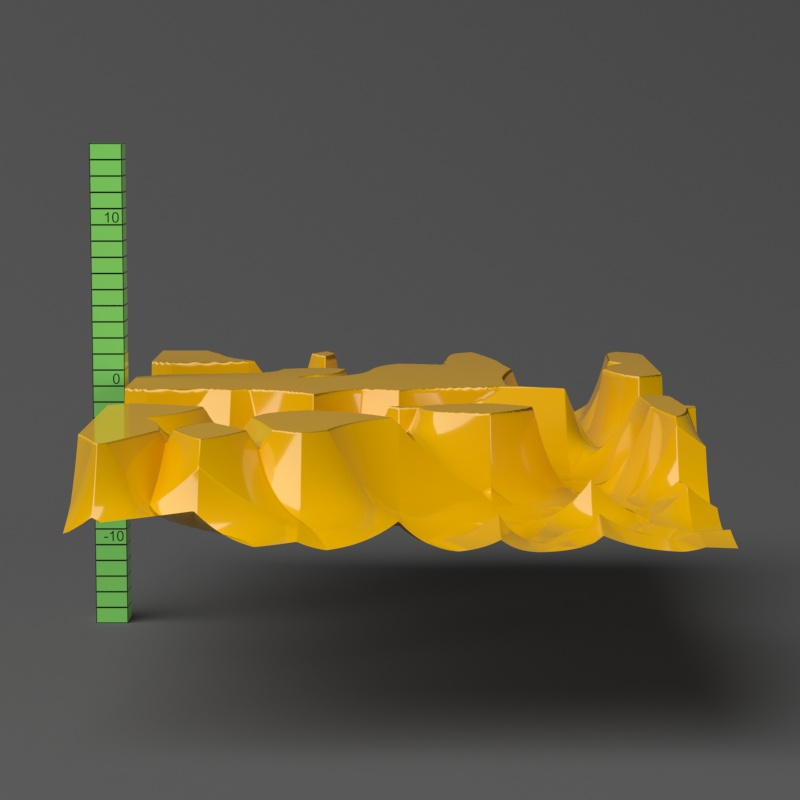
Shift = 0.0
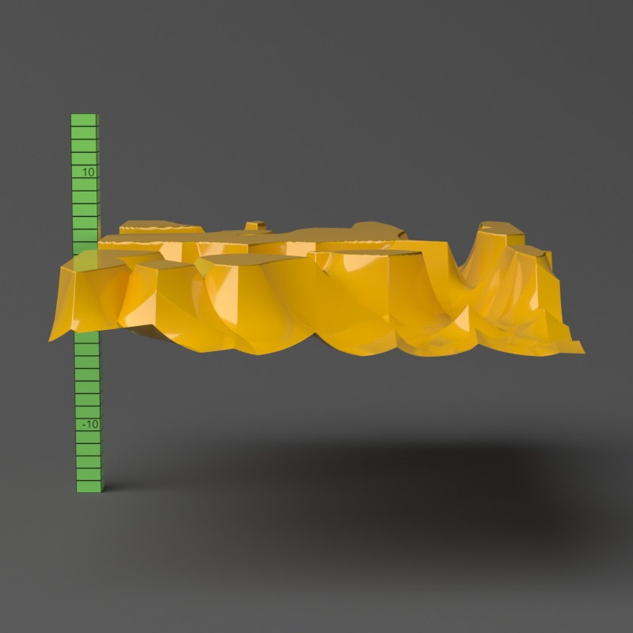
Shift = 5.0
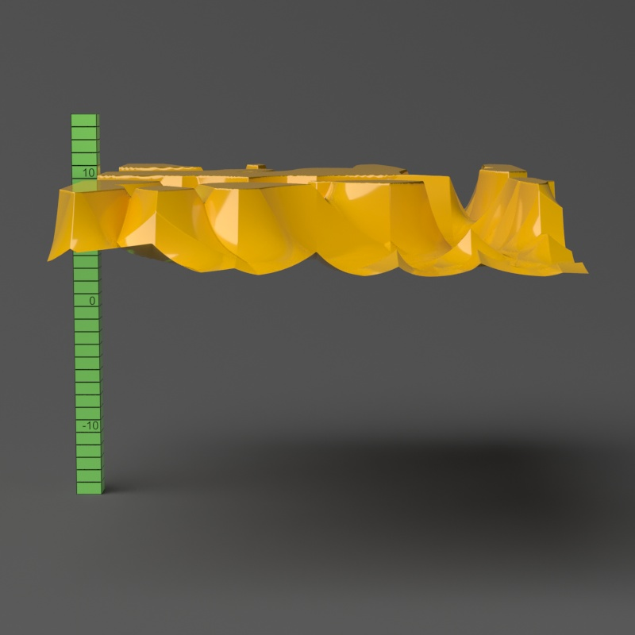
Shift = 10.0
-10.010.0
Example: Clip Mapping
The Water level parameter is absolute in world units. For this example, Amount is set to 5.0 and Shift is set to 0.0. Note that when Water level reaches Amount + Shift, all geometry is clipped.

Water level = 0.0 (no clipping)
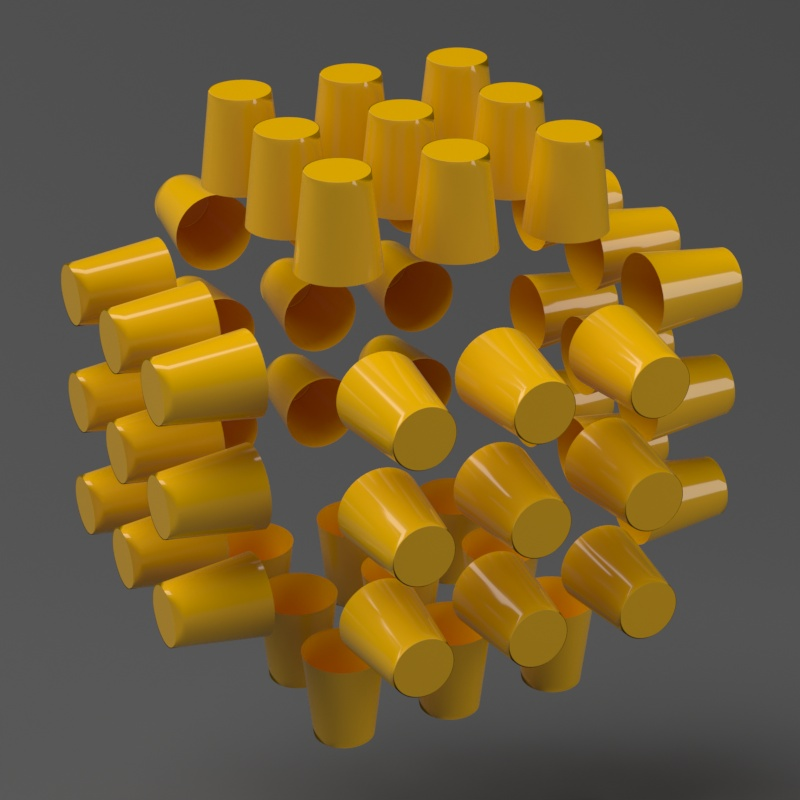
Water level = 1.25
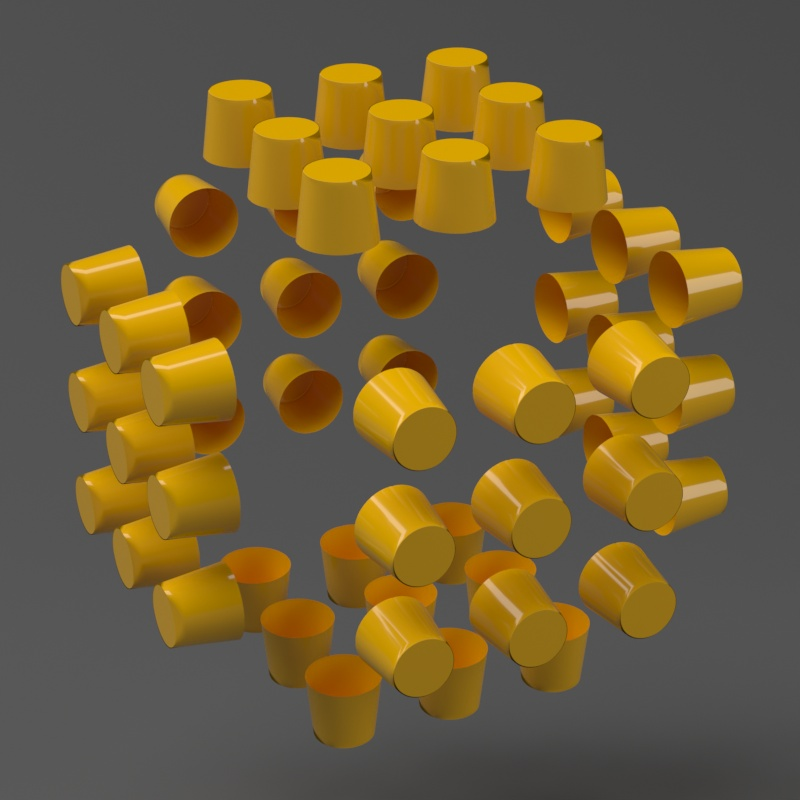
Water level = 2.5
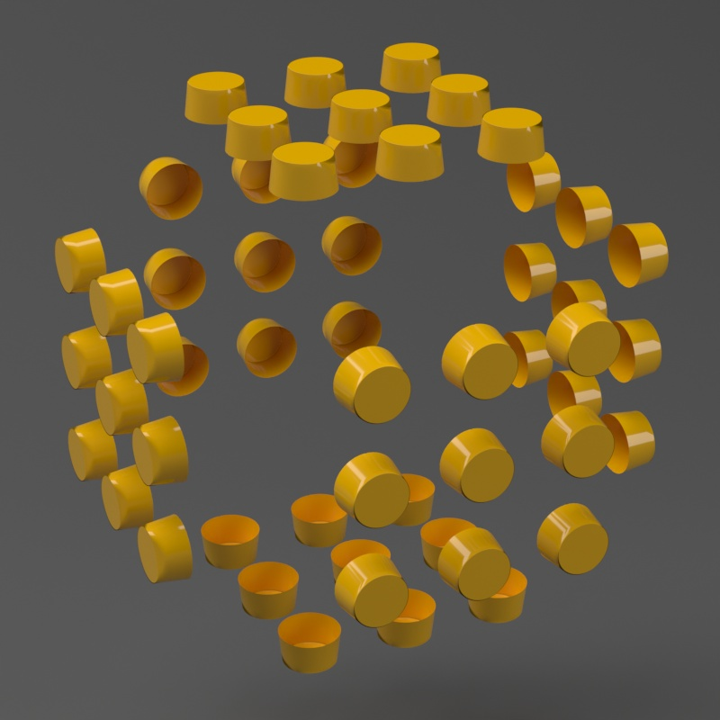
Water level = 3.75
Water level = 5.0 (all geometry is clipped)
0.05.0
2D Mapping
These parameters are available only when 2D mapping (landscape) is selected as the Type.
Resolution – Explicitly sets the resolution of the displacement texture that V-Ray uses during the displacement process. If the texture map is a bitmap, it is best to match this resolution to the size of the bitmap. For procedural 2D maps, set the resolution according to the desired quality and detail in the displacement. Note that V-Ray also automatically generates a normals map based on the displacement map to compensate for details not captured by the actual displaced surface.
Tight bounds – When enabled, V-Ray computes more precise bounding volumes for the displaced triangles, leading to slightly better rendering times.
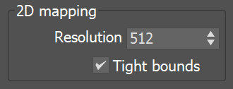
3D Mapping/Subdivision
The options in this section are available only when 3D mapping or Subdivision is selected as the Type. Some parameters are available only for one or the other Type selection.
Edge length – The maximum length of a subtriangle edge after subdivision. This affects the degree of subdivision before displacement, which in turn affects the quality of the displacement itself. Each triangle of the original mesh is subdivided into a number of subtriangles. More subtriangles mean more detail in the displacement, slower rendering times and more memory usage. Less subtriangles mean less detail, faster rendering and less memory used. Units used for this parameter depend on the View-dependent parameter. For more information, see the Edge Length example below.
View-dependent – Specifies whether Edge length is expressed in pixels or world units. When this option is enabled, the Edge length value determines the maximum length of a subtriangle edge in pixels, and a value of 1.0 means that the longest edge of each subtriangle is about one pixel long when projected on the screen. When this option is disabled, Edge length is the maximum subtriangle edge length in world units.
Use object mtl – Causes the displacement map to be taken from the object's material instead of the map selected in VRayDisplacementMod.
Max subdivs – Controls the maximum sub-triangles generated from any triangle of the original mesh when the displacement type is Subdivision. The value is in fact the square root of the maximum number of subtriangles. For example, a value of 256 means that at most 256 x 256 = 65536 subtriangles are generated for any given original triangle. It is not a good idea to keep this value very high. If you need to use higher values, it is better to tessellate the original mesh itself into smaller triangles instead. The actual subdivisions for a triangle are rounded up to the nearest power of two (this makes it easier to avoid gaps because of different tessellation on neighboring triangles).
Classic Catmull-Clark – When this option is enabled, V-Ray uses the Classic Catmull-Clark method for subdividing the mesh instead of the hybrid one used by default. This option should be enabled only if the mesh is composed entirely of rectangular faces or it will not work.
Preserve Geom Bnd – Specifies whether subdivision geometry borders are preserved or not.
Smooth UVs – When enabled, the UVs of the object are subdivided in addition to the geometry.
Preserve map Bnd – When Smooth UVs is enabled, this parameter determines what happens at UV boundaries.
All – All boundary UVs are preserved and not smoothed.
Internal – Only internal boundaries are preserved. Internal boundaries are UVs that are split in the UV space but are connected on the geometry. This option ensures that there is no smoothing of the UVs where they are stitched together.
None – All boundaries are smoothed.
Keep continuity – When enabled, V-Ray tries to produce a connected surface. Use it when you get splits (usually around sharp edges) in the displaced geometry due to different smoothing groups and/or material IDs on adjacent faces. Note that using material IDs is not a very good way to combine displacement maps since V-Ray cannot always guarantee the surface continuity. Use other methods (vertex colors, masks etc.) to blend different displacement maps. For more information, see the Keep Continuity example below.
Edge thresh – When Keep continuity is enabled, this value controls the extent to which maps on faces with different material IDs are blended. Note that V-Ray can only guarantee edge continuity, but not vertex continuity (meaning that the surface will not have gaps along edges, but there may be splits around vertices). For this reason, this value should be kept low.
Vector Displ – Vector displacement. If using a displacement texture that is not grayscale, V-Ray converts it to grayscale before rendering the displaced geometry. This mode allows V-Ray to use the Red, Green, and Blue channels of the displacement texture to displace the geometry in the U and V directions in addition to the direction of the face normal.
Disabled – No vector displacement; regular displacement along the surface normal is used.
Tangent – The texture is interpreted as 0.5-based tangent space displacement map.
Object – The texture values represent 0-based displacement in object space. Recommended when a VRayPtex texture is used for displacement. If mesh information is stored in the Ptex file, V-Ray can also displace correctly mesh deformations. Object-space Ptex vector displacement only works for subdivision surfaces when the displacement Type is Subdivision. For more information, see the Vector Displacement example below.
See the Rendering Mudbox Vector Displacement tutorial for a step-by-step guide on how to prepare and render a Vector Displacement map.
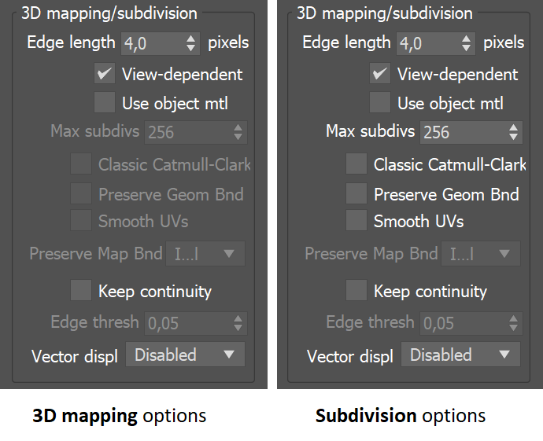
Example: Edge Length
This example shows the effects of increasing the Edge length parameter. In this example View-dependent is enabled, so Edge length is expressed in pixels. In the examples, the closeup view is a blow-up rather than a zoomed view. This means that Edge length in the closeup view refers to pixels in the original image, not the blow-up rendering. Click the images for a larger view.
The image below was rendered with a VRayEdgesTex map in the Diffuse slot of the material to show the original triangles of the mesh. V-Ray not only smooths the surface normals, but also automatically applies a normals map that represents the normal of the perfect displaced surface, which makes the surface look a lot more detailed than it actually is.
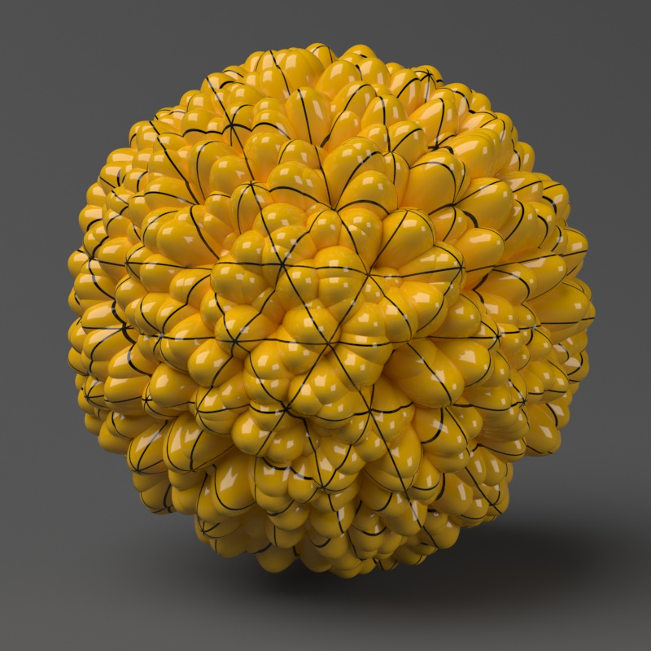 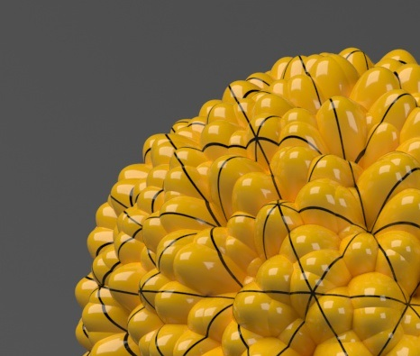
Edge length = 0.5
Edge length = 1.0
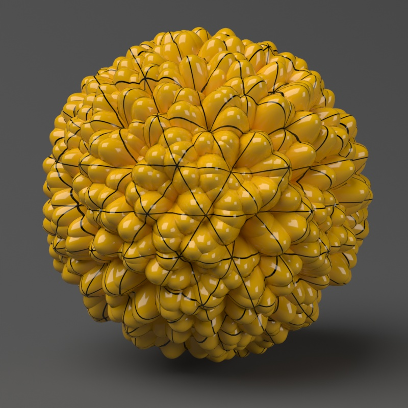
Edge length = 2.0
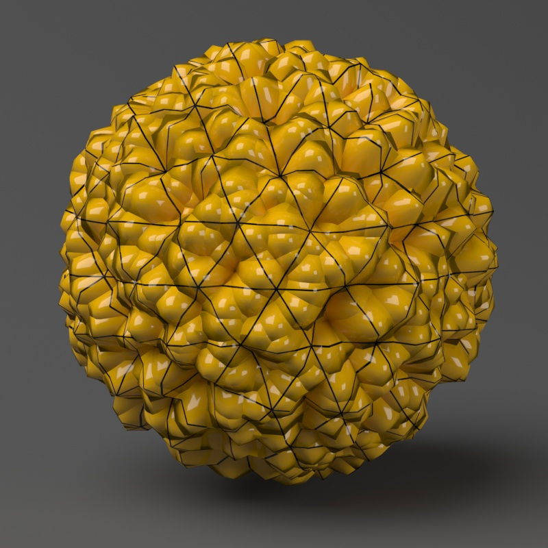 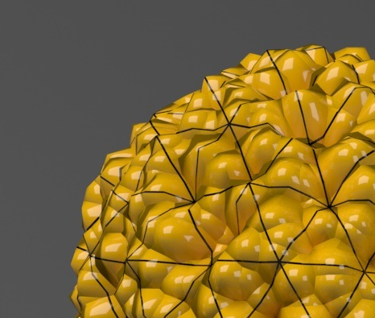
Edge length = 5.0
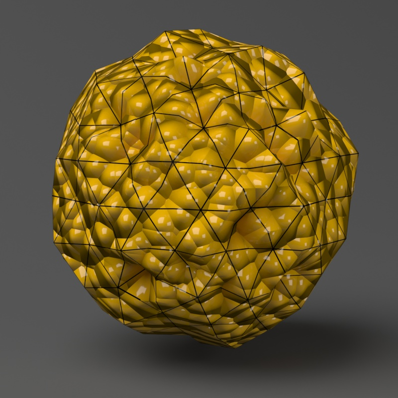
Edge length = 10.0
0.510.0
Example: Keep Continuity
The Keep continuity option is useful for objects with disjoint normals on neighboring triangles, usually because of different smoothing groups. In the middle image below you can see the edge splits produced by disjoint normals. Using the Keep continuity option avoids this problem. This option also helps to produce a smoother result across material ID boundaries for objects that have been assigned Multi-Sub-Object materials.
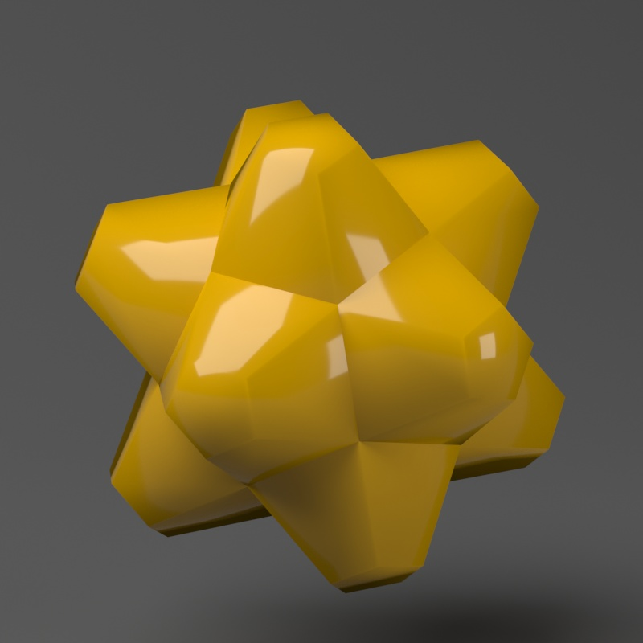
No displacement
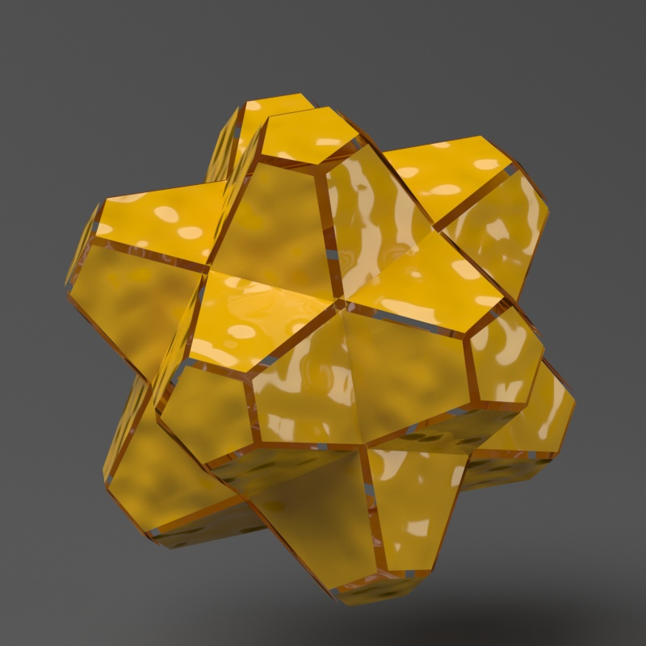
Keep continuity = disabled
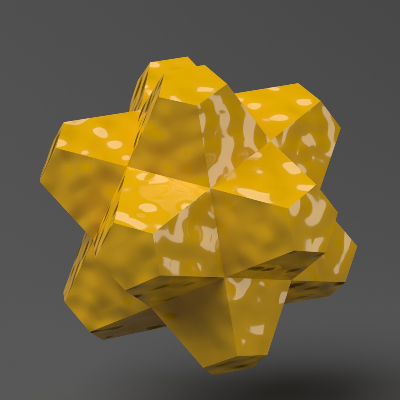
Keep continuity = enabled
Example: Vector Displacement
This example shows the effect of the Vector Displ (vector displacement) option in more detail.
The first image shows complex geometry on the left. This geometry was used to create a vector displacement map with the VRayVectorDisplBake utility. The second image shows the resulting displacement map, where the red, green and blue components define displacement vectors in the texture UVW space. The final image shows the vector displacement map applied on another object through the VRayDisplacementMod modifier.
 A piece of complex geometry, and a simple version
A piece of complex geometry, and a simple version
with a VRayVectorDisplBake material.
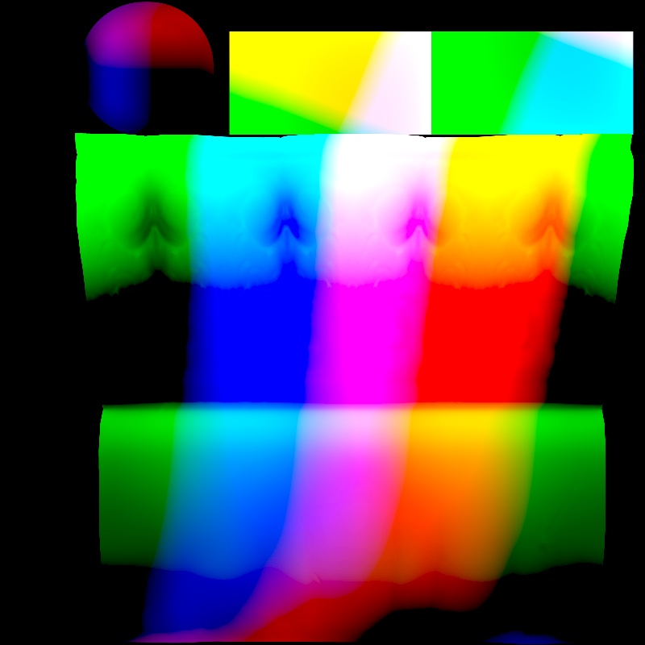
The displacement map, computed by texture baking with
the VRayCompleteMap element of the simple geometry.
The result is saved into an .exr file (a .png file is shown here).
OFFON
Column1.jpg
The displacement map applied on a different geometry through
the VRayDisplacementMod modifier with vector displacement.
Example: Texture Boundaries
This example shows a plane mapped with a displacement map that has negative values. With the default boundaries for the displacement (from 0 to 1) we are unable to see the geometry displaced in the negative direction. However, once we set Texmap min and Texmap max to -1 and 1 respectively, we can see the displaced geometry in both the positive and negative direction.
0/1-1/1
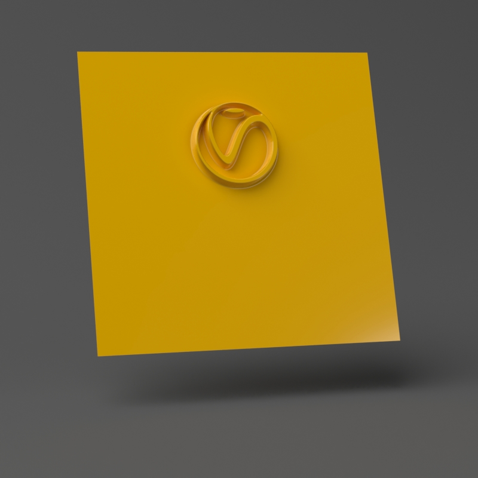
3D Performance
The options in this section affect the overall performance of the displacement function when 3D mapping or Subdivision is selected as the Type.
Tight bounds – When enabled, V-Ray tries to compute the exact bounding volume of the displaced triangles from the original mesh. This requires presampling of the displacement texture, but the rendering is faster, if the texture has large black or white areas. However, if the displacement texture is slow to evaluate and varies a lot between full black and white, it may be faster to turn this option off. When it is off, V-Ray assumes worst-case bounding volumes, and does not presample the texture. Note that this option affects only the 2D mapping (landscape) and 3D mapping modes; with the Subdivision method, V-Ray always computes the exact bounding volume and this parameter is ignored.
Pre-tessellated – When enabled, the displacement geometry is pre-compiled into an acceleration structure at the beginning of the rendering and remains there until the end of the frame. This can speed up the rendering but increases the memory usage.
When rendering on the GPU with displacement, all geometry is pre-compiled.
Cache normals – When this option is enabled, V-Ray generates and saves information about the normal of each newly generated vertex. This requires additional memory but speeds up the shading calculations during rendering.
This option is always on when rendering on the GPU. Enabling this option is not recommended with low displacement settings.
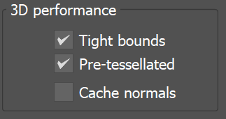
Notes
-
Textures are applied to the displaced surface rather than the original surface. This means that textures with Object XYZ and World XYZ mapping might look different on the displaced object, compared to how they look on the original undisplaced one. If this is not desired (e.g. you want the displacement map to match the texture), use explicit channel mapping for the material textures and use the Object XYZ/World XYZ mapping for displacement maps only.
-
Displaced objects do not work properly with standard shadow maps. The shadow maps include information about the undisplaced mesh. For small displacement amounts, this might work fine. Note that displaced objects cast accurate shadows with VRayShadowMap shadows.
-
VRayDisplacementMod has no effect on VRayPlane objects, or VRayFur objects. You can add VRayDisplacementMod on a VRayProxy though.
-
The 2D mapping (landscape) method ignores the Tiling parameters specified in the textures themselves; as a side effect this means that it does not work with the Real-world map size options in the Bitmap and other textures. Instead, you must modify the UVW coordinates of the object, or use the 3D mapping method.
-
The 2D mapping (landscape) method only supports one UV mapping channel.